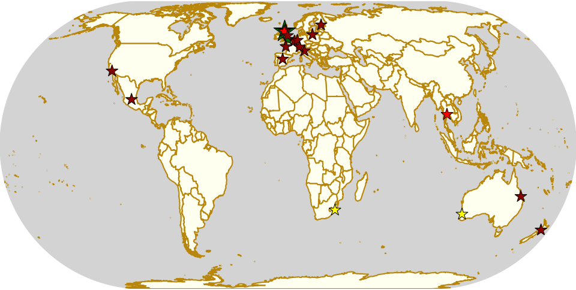

Weekend Highlights: 26 October 2019
This is another exceptionally busy weekend, so again we're moving Sunday-only events into a separate update later in the week. Even doing that, it's a packed schedule, including: Bologna's Hyenas hosting two days of roller derby at the Ferrara Tattoo Convention, a double header of derby up in Aberdeen, Nantes and Gdańsk both hosting events to celebrate their leagues' respective anniversaries, a whole sur5al tournament in New Zealand, and a two-track international tournament in Hull! (And more - the first MRDA-sanctioned triple header in Spain, a weekend of derby in Querétaro... !)
We're trying to stick to our rules below, so a lot of events - especially in Australia, which is currently at the height of its Spring events schedule - are having to be missed off the list. (We're open to considering treating very large countries in terms of their constituent States, for the purpose of allowing events, but we'd like the community to let us know how they feel about that.)
The rules are, as usual: highlights limited to 1 event per country, with an "extra" event allowed for a different kind of fixture (so, 1 tournament and 1 bootcamp), or if they involve Scottish leagues (since we are the Scottish Roller Derby Blog). Other notability might also allow the extra event - great posters, notable teams, etc. (League birthdays may count as "special" enough, at our discretion ;) )
We've bent the rules a bit this time, because it's important to highlight derby in regions which need more attention.
In a bid to make this list as useful as possible, we've avoided links to Facebook except where noted. (Links to Teams are to non-Facebook resources - Instagram, or actual team pages - we'd strongly recommend that Teams get themselves an actual webpage [we can help host one if you need help]).
Locations are roughly organised East-West.
Sat: Whanganui, New Zealand
West Coast Bombers host an action-packed day of derby, as their graduating freshies play a full Sur5al tournament, followed by WCB taking on Remutaka, and an open scrimmage.
- Sur5al of the Freshies tournament
- WCB Squadron (Whanganui) versus Remutaka Raptors
- Black versus White Scrimmage (open subs)
Only middle bout in FTS
Event starts: 1030 Saturday (doors open)
Venue: Jubilee Stadium, Whanganui, New Zealand
Sat-Sun: Rockhampton, QLD, Australia
Rocky Roller Derby host the 2019 edition of their annual Knocktoberfest regional tournament: a 5 team round-robin tournament (10 single-period bouts over two days) plus 3 OTA-gender policy black versus white scrimmages, and a junior derby bout!
- Round Robin Teams:
- Brisbane City Rollers
- Fraser Coast United Rollers
- Gladstone Roller Derby
- Mackay City Roller Maidens
- Rocky Roller Derby (Rockhampton)
These games not in FTS due to their short format
Event starts: 0830 Saturday (doors open)
Venue: YWCA, 125 Robinson Street, North Rockhampton, Rockhampton, QLD, Australia
Sat: Mirrabooka, WA, Australia
WA Roller Derby host the Grand Final of their Home Season, as Sonic Doom take on the Atomic Sirens.
- Sonic Doom versus Atomic Sirens (WARD Home teams)
Event starts: 1900 Saturday (doors open)
Venue: Herb Graham Recreation Centre - City of Stirling, 38 Ashbury Crescent, Mirrabooka, WA, Australia
Fri: Bangkok, Thailand
Bangkok Roller Derby host a Halloween-themed Roller Disco (which we're allowing despite there not being any derby attached to it, as we know these are also used for outreach and promotion of Roller skating)
Event starts: 1900 Friday
Venue: Roller Dome at Emporium, 622 Sukhumvit Rd, Khwaeng Khlong Tan, Klong Toey, Bangkok, Thailand
Fri: Durban, South Africa
Durban Roller Derby host a Halloween themed WFTDA-rules home teams bout, with donations for tickets going towards their attendance at the South African National tournament, National Derby Fest in a few weeks. (We have a short article on NDF2019 coming later this week.)
- Gruesome Ghouls versus Twisted Nightmares (home teams Durban)
Event starts: 1900 Friday (doors open)
Venue: Apn Portuguese Club, 5 Wright Place, Durban, KwaZulu-Natal
Sat: Gdańsk, Poland
[FACEBOOK LINK (bout)] [FACEBOOK LINK (rollerdisco)]
Gdańsk Chrome Sirens are celebrating their 1st anniversary with a double event: a Short Track Roller Derby bout, followed by a Halloween themed Roller Disco. Entry to the roller disco is reduced if you are in fancy dress!
- Short Track home-teams bout: 🔮GORE SIRENS🔮 versus ✨GLAM MERMAIDS✨
Event starts: 1930 Saturday (first whistle)
Venue: SkateArena, Stadion Energa Gdańsk, Pokoleń Lechii Gdańsk 1, Gdańsk, Poland
Sat-Sun: Ferrara, Italy
[FACEBOOK LINK] [FTS LINK 1] [FTS LINK 2] [FTS LINK 3]
The Bone-Crushing Hyenas are at the Ferrara Tattoo Convention, and hosting a two-day schedule of Roller Derby events, including a triple-header round robin on Sunday!
- Saturday:
- Open To All genders scrimmage
- Crimson Vipers (Bergamo) versus WFTDA-gender open subs team
- Sunday:
- Stryx (Lecce) versus Roller Derby Murcia
- Bone-Crushing Hyenas (Bologna) versus Roller Derby Murcia
- Bone-Crushing Hyenas versus Stryx
FTS links for Sunday games
Event starts: 1430 Saturday & 1400 Sunday
Venue: Via della Fiera 11, 44124 Ferrara FE, Italy
Sat-Sun: Lucerne, Switzerland
[FACEBOOK LINK (flyer)] [FTS LINK 1] [FTS LINK 2]
The Hellveticats host a double-header of international derby in Lucerne, which we almost missed as it doesn't have a Facebook Event.
- Las Folles Gèrent (Bienne) versus SBG Knockouts (Salzburg)
- The Hellveticas (Lucerne | Luzern) versus Steelcity Rollers (Linz)
Event starts: 1530 Saturday (doors open)
Venue: Mehrzweckhalle aal Almend, Murmattweg 6, Luzern, Switzerland
Sat-Sun: Cologne, Germany
[FACEBOOK LINK] [FTS LINK (Bundesliga D1)] [FTS LINK (Bundesliga D2)]
Cologne Roller Derby host a double header of Bundesliga games, with a Division 1 bout headlining, and then the hosts playing a Division 2 game against Mannheim's
- Ruhrpott Roller Derby (Essen) versus Stuttgart Valley Roller Derby [Bundesliga D1]
- Graveyard Queens (Cologne | Köln) versus Delta Quads (Mannheim) [Bundesliga D2]
Event starts: 1630 Saturday (doors open)
Venue: Sporthalle Everhardstraße, Everhardstraße 60, Cologne, Germany
Sat: Floreffe, Belgium
[FACEBOOK LINK] [FTS LINK 1] [FTS LINK 2] [FTS LINK 3]
Namur Roller Girls and Namur Glorious Basterds co-host a triple header of international derby, as three of Namur's teams take on all comers.
- Namur Roller Girls B versus Atomic Kittens (Brussels B)
- Namur Glorious Basterds (Namur M) versus Les Marquis de Sabre (Lille M)
- Namur Roller Girls C versus The Wreckoning (Kaiserslautern)
Event starts: 1400 Saturday
Venue: Centre Sportif Communal de Floreffe, rue Joseph Hanse, Floreffe, Belgium
Sat-Sun: London, UK
Team Unicorn Roller Derby host an exciting two-day bootcamp, as Crime City Rollers Curly Håår and Below Me visit London to coach four 3-hour sessions of Jamming and Blocking skills. (Multiple sessions to allow as many people as possible to attend)
- Sessions:
- Rookie/Intermediate
- 3 x Intermediate/Advanced (Sunday sessions still have skating tickets available at time of writing)
Event starts: 1000 Sat, 1300 Sat, 1000 Sun, 1300 Sun
Venue: City of London Academy, 240 Lynton Rd, London, United Kingdom
Sat: Aberdeen, Scotland
Granite City Roller Derby host a double-header event, with both Open-To-All and WFTDA-gender bouts. This event collects for the foodbank charity CFINE.
- North East Royalty (OTA "north-east of Scotland") versus Rebellious Rollers (?)
- Northern Fights (Granite City Roller Derby | Aberdeen) versus Bairn City Rollers' Central Belters (Falkirk & Stirling)
Event starts: 1230 Saturday
Venue: Beach Leisure Centre, Esplanade, Sea Beach, Aberdeen, Scotland
Thurs & Fri: Dundee, Scotland
[FACEBOOK LINK 1] [FACEBOOK LINK 2]
Dundee Roller Derby host two events towards the end of this week - on Thursday, the return of their less-formal "Officials Hang-out and Chat" - a chance to discuss rules in an informal session, and on Friday, an Open-To-All genders Hallowween themed scrim (fancy dress encouraged).
- Thursday: Officals "Hangout-and-chat" - topic "Defining the Pack / Out of Play" + "How to Penalty & Line-up Track"
- Friday: OTA Scrim
Event starts: 1930 Thursday & 2000 Friday
Venue: (Thursday:) St Andrews Brewing Co, Caird Hall, 2-3 Shore Terrace; (Friday:) Dundee International Sports Centre, Mains Loan; Dundee, Scotland
Sat-Sun: Kingston upon Hull, UK
Hulls Angels Roller Derby host the return of Humber Struck, in a new, bigger form - a WFTDA-sanctioned international tournament in Hull! Even more excitingly, this is a two-track event, over two days, so we expect a packed schedule with 8 teams competing.
- Initial games:
- Hulls Angels Roller Derby versus B.M.O Roller Derby Girls ( )
- Sheffield Steel Roller Derby versus Brighton Rockers Roller Derby
- Roller Derby Bordeaux Club versus Dom City Roller Derby ( )
- Cannibal Marmots (Grenoble) versus Leicestershire Dolly Rockit Rollers
- Showcase game: Durham Roller Derby versus Hulls Angels Bees
Event starts: 0900 Saturday (doors open)
Venue: Airco Arena, Walton Street, Kingston upon Hull, UK
Sat-Sun: Nantes, France
[FACEBOOK LINK] [FTS LINK 1] [FTS LINK 2] [FTS LINK 3] [FTS LINK M]
Nantes Derby Girls celebrate 9 years of Roller Derby with a two-day event: a triple header for their rec, B and A teams on Saturday, and a double header for MRDA and Open-To-All on Sunday!
- Saturday:
- Les Filles de Neptune (Nantes Rec) versus les Bugneuses (Lyon C)
- Les Divines Machines (Nantes B) versus les GoreGones (Lyon B)
- Les Duchesses (Nantes A) versus les Faux Soyeuses (Lyon A)
- Sunday:
- Jules Vénères (Nantes M) versus LugdunHom (Lyon M)
- Nantes+Lyon versus Lyon+Nantes (Open To All mixed teams game)
Event starts: 1330 Saturday (doors open), 1130 Sunday (doors open)
Venue: Skatepark le Hangar, 9 Allée des Vinaigriers, Nantes, France
Sat: Madrid, Spain
[FACEBOOK LINK] [FTS LINK 1] [FTS LINK 2] [FTS LINK 3]
MadRiders host their first international triple header of sanctioned MRDA games (and the first in Spain!), "Quijote's Madness".
- Wolfgang Roller Derby (Orcet M) versus Crash Test Brummies (Birmingham M)
- MadRiders (Madrid M) versus Wolfgang Roller Derby
- MadRiders versus Crash Test Brummies
Event starts: 0900 Saturday (doors open)
Venue: Pista Los Rosales, Av. Los Rosales 135, Madrid, Spain
Sat-Sun: Querétaro, Mexico
Rock City Roller Derby host a Tournment of Calavera for the upcoming Diá de los Muertos; a weekend-long event featuring teams from Querétaro, Mexico City and nearby areas. At the time of writing, the schedule is still pending, so we can only tell you the attending teams (if this were a round-robin, then we'd expect 3 games each day).
- Teams:
- Aniquiladoras Roller Derby (Mexico City)
- Ravens Roller Derby (Querétaro)
- Nymerias Roller Derby (Querétaro B)
- Fugaz Roller Derby (Toluca & Mexico City)
FTS link currently empty as we don't know the schedule
Event starts: pending
Venue: UAQ Campus Juriquilla, Av. de las Ciencias Sin Número Campus Juriquilla Juriquilla, Querétaro, Mexico
Also of interest, due to their attendees:
Sat: Sylmar, CA, USA
San Fernando Valley Roller Derby host a double header of interest to us due to the attendance of Baja California's Baja Roller Derby
- Golden State Heat (Bakersfield M) home teams
- SFV the Like OMG's (Sylmar) versus Baja Roller Derby
Event starts: 1800 Saturday (doors open)
Venue: 12900 Bradley Ave, Sylmar, CA, USA